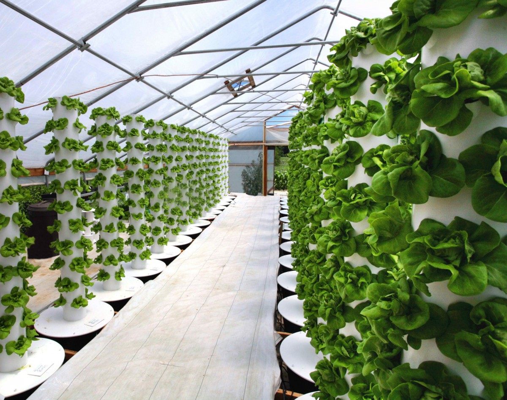
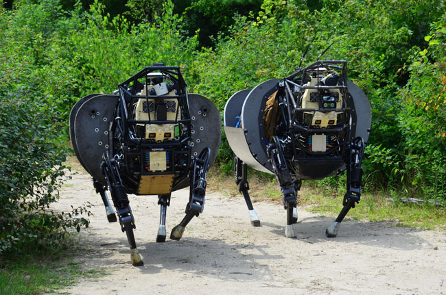
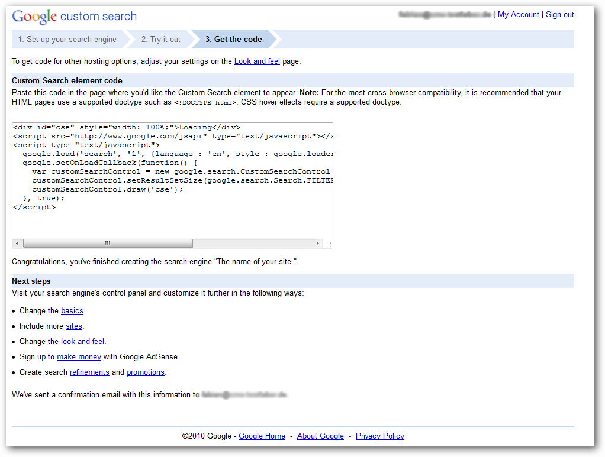
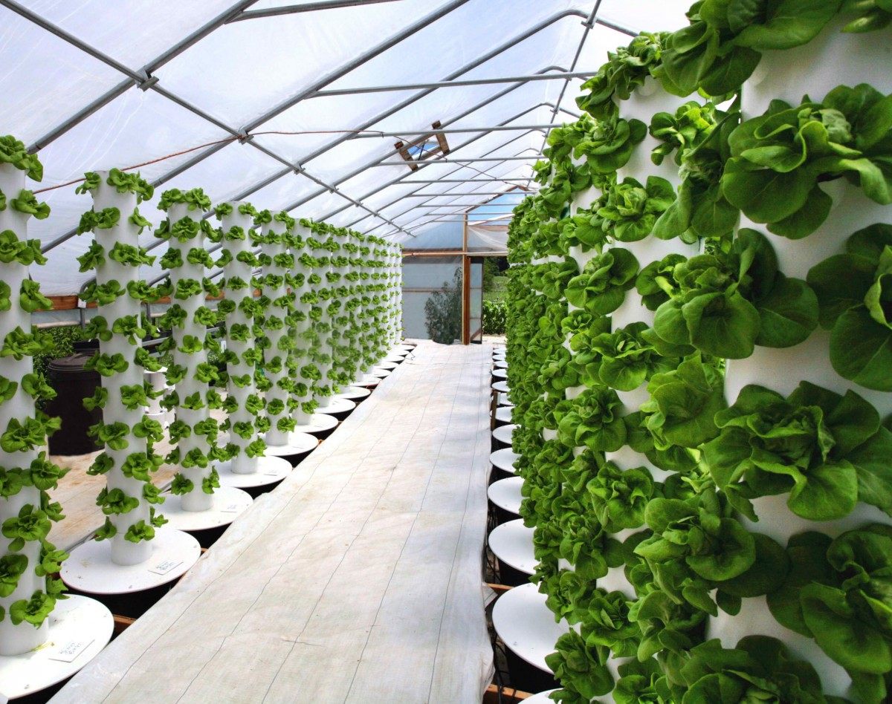
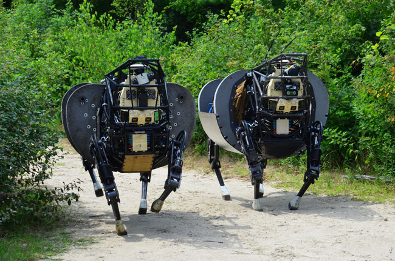
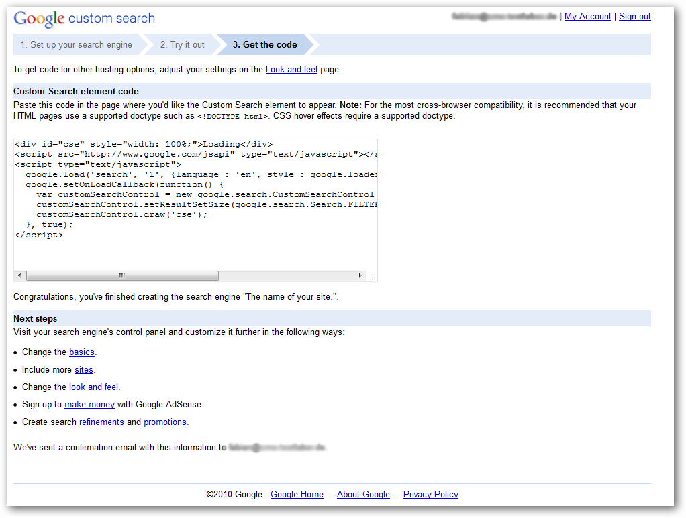
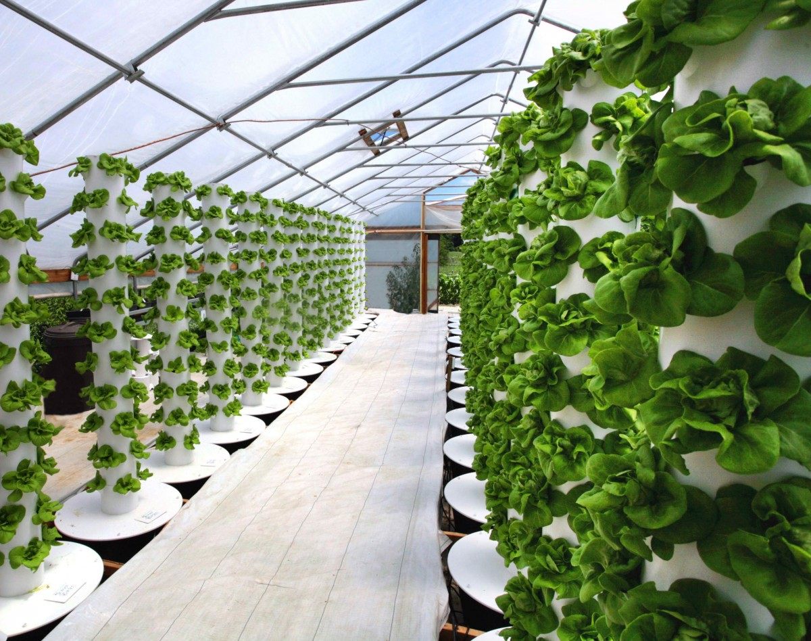
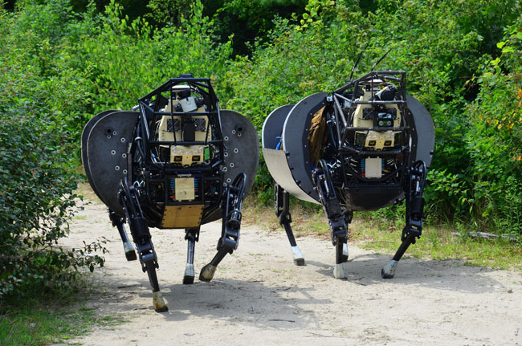
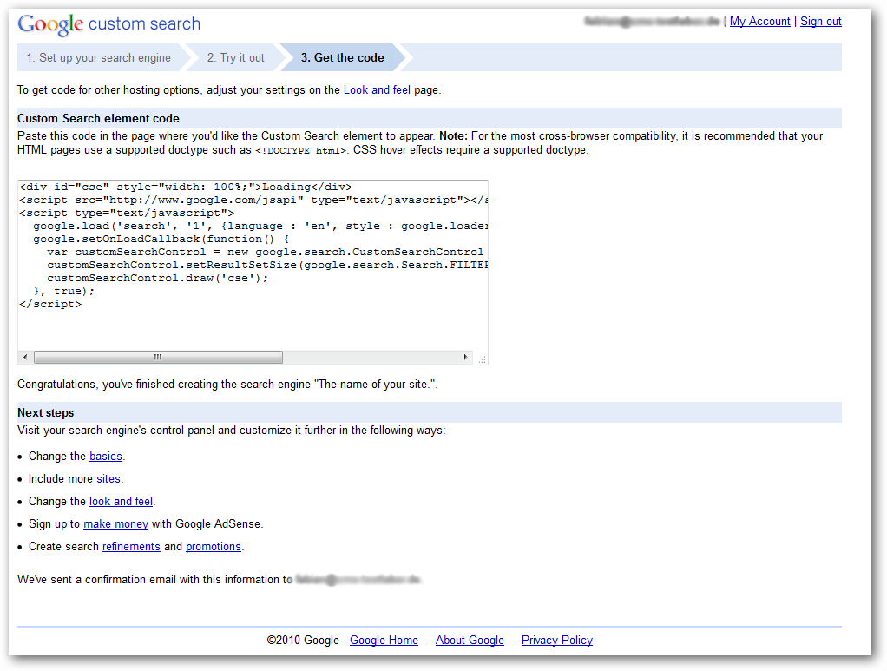

O Grande Evento da Oxigenação, também chamado de Catástrofe de Oxigênio, Crise de Oxigênio, Holocausto de Oxigênio ou Revolução de Oxigênio, foi o surgimento biologicamente induzido de dioxigénio, O2, na atmosfera terrestre. Acredita-se que foram as cianobactérias oceânicas, que evoluíram para formas macroscópicas coordenadas mais de 2,3 bilhões de anos atrás, os primeiros micróbios a produzir oxigênio pela fotossíntese. Antes do Grande Evento da Oxigenação, qualquer oxigênio livre produzido era capturado quimicamente por ferro dissolvido ou matéria orgânica. O grande evento de oxigenação foi o momento em que esses dissipadores de oxigênio se tornaram saturados, altura em que o oxigênio produzido pelas cianobactérias tornou-se livre para escapar na atmosfera.
O aumento da produção de oxigênio colocou a atmosfera original da Terra fora de equilíbrio. O oxigênio livre é tóxico para organismos anaeróbicos obrigatórios, e as elevadas concentrações podem ter destruído a maioria desses organismos no momento. As cianobactérias foram, portanto, responsáveis por uma das mais importantes extinções em massa da história da Terra. Eventualmente, a evolução dos organismos aeróbicos que consumiram oxigênio estabeleceu um equilíbrio de acordo com a sua disponibilidade. O oxigênio livre tem sido um componente importante da atmosfera desde então.


 




